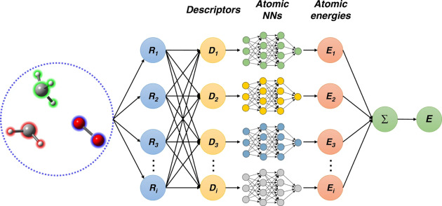

Vaibhav Sahu
A Computational Science Graduate student at University of Pennsylvania
Hello, I am doing my Master's in Scientific Computing at UPenn. I am a research enthusiast, and my interests lie in Scientific Machine Learning. However, I have been exploring more of NLP and LLMs and their use in solving problems. I am excited to apply AI to solve problems in Science and Engineering. Currently, I am looking for opportunities in the Industry to get some valuable work experience and exposure. I also enjoy playing guitar and watching anime and video games.

Hangman is a very complex problem to tackle. Apart from having extensive knowledge of words, it also relies on being able to guess letters based on phonetics and rules around the sub-words of a language, albeit doing it within a specific number of tries. In this project, I trained a Google CANINE-s character level LLM from scratch on hangman states generated from 200k words and encoded as text for the model to learn. I was able to achieve an accuracy of 46% game-winning accuracy with 6 wrong guesses. I then further fine-tuned the model by making it play and learn from its own mistakes on the training data to achieve 56% accuracy with 6 tries and 83% accuracy with 10 tries. A demo can be found here.
Word embeddings from Large Language Models can be used in several tasks, from sentiment analysis to textual style transfer and finding synonyms in other contexts. This project aimed to use BERT word embeddings to characterize the complexity and formality level of given words and documents. We do this using the implementation from Lyu et al. and expanding upon it by including anisotropy reduction through k-means clustering, fine-tuning BERT models to perform the same task, and using other similarity metrics to perform the task. Our results show that reducing anisotropy through k-means clustering improves performance. We also implement new similarity metrics to improve performance over cosine similarity for some features and fine-tune BERT models to perform the same task at the document level.
Machine Learning is a tool that has been rapidly gaining traction in the field of modeling Potentials for Molecular Modeling and Simulation. The early Neural Network Potentials, such as that by Behler-Parinello, went into great depth in feature designing to preserve the symmetry of the Potential Energy Surface (PES). We analyze a modern up-and-coming NNP framework called DeePMD, the energy landscape of these neural network potentials, and how well it predicts the melting behavior of copper systems.

AI has revolutionized the field of security, amongst many others. Facial Recognition is one of its most useful applications. However, amidst the pandemic, humans have become increasingly good at recognizing people with masks. Can AI do the same?
Monte Carlo simulations are among the oldest and most popular ways to determine probability distributions and perform integrals! Likewise, they are used to simulate processes in Statistical Physics. The Ising model is a mathematical model used in statistical physics to study the behavior of interacting spins in a system. A problem single flipping Metropolis algorithm faces is that it slows down tremendously near the critical point. Here's a neat way to solve this problem using the Wolff cluster algorithm.